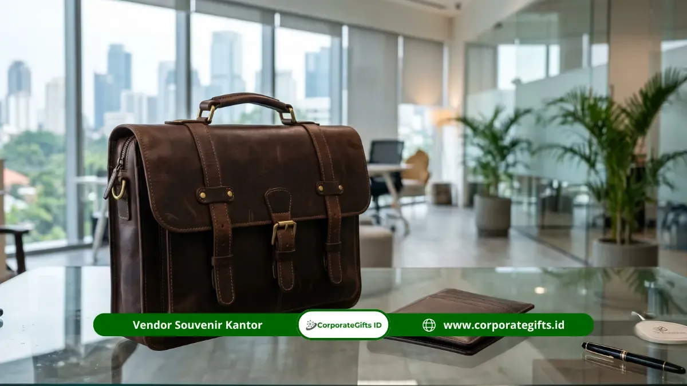

Corporate Gifts ID - Hamper lifestyle eksekutif anniversary untuk direksi adalah paket hadiah korporat berisi barang gaya hidup premium seperti tas kulit, dompet, jam meja, dan desk organizer yang dipilih untuk mendukung aktivitas kerja harian jajaran direksi sekaligus memberi kesan elegan dan personal pada momen anniversary perusahaan.
Poin Kunci Hamper Lifestyle Eksekutif:
- Fungsi Praktis & Premium: Menyatukan nilai guna tinggi dalam rutinitas kerja dengan estetika elegan.
- Material Tahan Lama: Mengutamakan bahan bermutu tinggi seperti kulit asli, kayu solid, dan aksen logam.
- Investasi Branding Jangka Panjang: Barang lifestyle dipakai berulang kali, menjaga memori apresiasi bertahan bertahun-tahun.
- Personalisasi Eksklusif: Custom logo halus atau inisial nama direksi menambah kesan eksklusif dan prestisius.
Apa Itu Hamper Lifestyle Eksekutif untuk Direksi?
Hamper lifestyle eksekutif untuk direksi adalah parsel berisi barang gaya hidup premium yang mendukung produktivitas dan citra profesional jajaran pimpinan perusahaan.
Berbeda dari hamper kuliner yang bersifat konsumtif dan lekas habis, hamper lifestyle berisi barang yang dapat dipakai berulang dalam jangka panjang. Hal ini membuat kesan apresiasi dari manajemen atau pemegang saham dapat bertahan lebih lama serta selalu menyertai aktivitas kerja direksi sehari-hari.
Pemilihan produk biasanya mempertimbangkan kebiasaan kerja, tingkat mobilitas tinggi, dan preferensi gaya formal masing-masing jajaran pimpinan.
Mengapa Hamper Lifestyle Banyak Dipilih untuk Anniversary Direksi?
Hamper lifestyle banyak dipilih karena barang fungsional premium memberikan nilai guna jangka panjang dibanding hadiah yang sifatnya sekali pakai.
Survei industri gifting pada 2024 mencatat lebih dari 68 persen perusahaan menengah hingga besar di dunia memberikan hadiah korporat setidaknya sekali setahun, dengan kategori barang lifestyle dan aksesori kerja menjadi salah satu pilihan terpopuler.
Bagi jajaran direksi, barang lifestyle premium juga sering terlihat langsung oleh kolega internal, pemangku kepentingan (*stakeholders*), maupun mitra bisnis saat menghadiri rapat penting dan pertemuan formal.
10 Rekomendasi Hamper Lifestyle Eksekutif untuk Direksi
Rekomendasi hamper lifestyle eksekutif untuk direksi berikut menonjolkan produk fungsional dengan material premium dan desain yang rapi untuk momen ulang tahun korporat:
1. Tas Kerja Kulit Premium Eksekutif
Tas kerja berbahan kulit asli dengan desain minimalis dan kompartemen laptop berproteksi tinggi. Sangat cocok menemani aktivitas dinamis direksi dalam menghadiri pertemuan bisnis maupun perjalanan dinas antarkota.
2. Dompet Kulit Eksekutif Slim Design
Dompet kulit tipis berfitur proteksi RFID dengan penataan kartu yang rapi. Praktis digunakan sehari-hari di saku jas tanpa mengurangi kesan formal dan elegan.
3. Jam Meja Custom Material Kayu atau Metal
Jam meja dengan bahan kayu walnut solid atau metal brush beraksen ukir laser. Elemen dekorasi fungsional yang mewah untuk mempercantik meja kerja ruang direksi.
4. Set Desk Organizer Berbahan Kayu Solid
Organizer meja lengkap untuk menata pulpen premium, kartu nama, smartphone, dan memo kecil. Menjaga ruang kerja pimpinan tetap bersih, rapi, dan mencerminkan profesionalisme tinggi.
5. Power Bank Premium Desain Minimalis
Power bank berdaya besar dengan bodi aluminium tipis dan fitur *wireless fast charging*. Sangat esensial untuk mendukung mobilitas tinggi direksi di luar kantor.

Koleksi produk lifestyle premium: tas kerja kulit, travel kit, dan desk organizer eksklusif.
6. Headphone Wireless Premium Eksekutif
Headphone nirkabel dengan fitur peredam bising aktif (*Active Noise Cancellation*). Membantu direksi fokus saat mendengarkan analisis bisnis, rapat virtual penting, maupun saat menikmati waktu istirahat pribadi.
7. Payung Lipat Premium Otomatis
Payung lipat kokoh dengan mekanisme buka-tutup otomatis satu tombol dan rangka tahan angin (*windproof*). Barang fungsional yang tetap terasa prestisius saat dibawa bepergian.
8. Travel Kit Premium untuk Perjalanan Bisnis
Set travel organizer kulit berisi kantong kabel gadget, pouch paspor, dan perlengkapan esensial. Mendukung kenyamanan dan kerapian mobilitas direksi saat dinas luar kota maupun luar negeri.
9. Kacamata Anti Radiasi untuk Kerja Layar
Kacamata berbingkai titanium ringan dengan lensa anti sinar biru (*blue light filter*). Mendukung kesehatan dan kenyamanan mata direksi yang banyak membaca laporan digital di depan layar gawai.
10. Buku Catatan Hardcover Premium Eksklusif
Buku jurnal bersampul kulit keras dengan kertas *acid-free* tebal dan pembatas pita sutra. Media elegan untuk mencatat keputusan strategis perusahaan maupun sebagai memorabilia berharga anniversary.
Tabel Karakteristik Produk Hamper Lifestyle Direksi
Berikut rangkuman karakteristik dan keunggulan tiap kategori item lifestyle untuk memudahkan penyusunan paket hampers:
| Kategori Produk | Contoh Item Pilihan | Material Unggulan | Nilai Manfaat Bagi Direksi |
|---|---|---|---|
| Executive Leather | Tas kerja, dompet kartu RFID, pouch travel | Kulit sapi asli (*genuine leather*) | Menunjang citra profesional dan mobilitas pertemuan formal |
| Desk Accessories | Set desk organizer, jam meja, tempat pulpen | Kayu solid (Walnut/Teak), brushed metal | Menata ruang kerja rapi, elegan, dan menaikkan fokus kerja |
| Smart Gadget | Power bank slim, headphone ANC wireless | Anodized aluminium, matte polymer | Konektivitas stabil dan kenyamanan saat meeting hybrid |
| Stationery & Jurnal | Notebook hardcover eksklusif, pulpen metal | Kertas 100 gsm premium, leather cover | Mendokumentasikan ide strategis dan kenang-kenangan anniversary |
Tips & Kesimpulan Praktis Pengadaan Hamper Direksi
Dalam merancang paket hampers anniversary untuk jajaran dewan direksi, perhatikan prinsip-prinsip kurasi berikut:
- Relevansi Tinggi: Pilih produk lifestyle yang benar-benar selaras dengan rutinitas harian direksi, bukan sekadar pajangan pasif.
- Prioritaskan Material Bermutu: Utamakan material premium seperti kulit asli, kayu solid, atau logam berkualitas agar tahan lama bertahun-tahun.
- Personalisasi Elegan: Terapkan grafir logo perusahaan berukuran proporsional atau *debossing* inisial nama direksi untuk sentuhan personal yang prestisius.
- Kemasan Hardbox Mewah: Lengkapi paket dengan *hardbox* berlapis kain satin atau beludru serta kartu ucapan anniversary yang ditandatangani resmi.